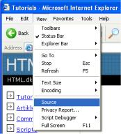

Diese Lektion stellt Ihnen kurz Ihren neuen Freund vor, HTML.
HTML ist die “Muttersprache” Ihres Browsers.
Die Geschichte kurz und knapp: HTML wurde im Jahr 1990 von dem Wissenschaftler Tim Berners-Lee erfunden. Sinn und Zweck war eigentlich, dass Wissenschaftler verschiedener Universitäten so einfacher auf die Forschungsergebnisse anderer zugreifen können sollten. Das Projekt wurde ein größerer Erfolg, als Tim Berners-Lee je gedacht hatte. Mit der Erfindung von HTML legte er den Grundstein für das Internet, wie wir es heute kennen.
HTML ist eine Sprache, die es ermöglicht, Informationen (so z.B. wissenschaftliche Forschungen) im Internet zu präsentieren. Das, was Sie im Internet sehen, ist die Interpretation des Quellcodes durch den Browser. Um den HTML-Code einer Seite anzuschauen, wählen Sie im Menü des Browsers “Ansicht” und hier den Punkt “Quelltext”. Je nach verwendetem Browser, kann die Bezeichnung etwas abweichen.

Für ein untrainiertes Auge sieht der HTML-Code etwas komplitziert aus. Aber dieses Tutorial wird Ihnen gleich den Sinn des Ganzen nahebringen.
Wenn Sie Webseiten erstellen wollen, geht kein Weg an HTML vorbei. Auch wenn Sie ein Programm wie z.B. Dreamweaver nutzen um die Webseiten zu erstellen, kann ein Grundwissen von HTML das Leben viel leichter und das Ergebnis viel besser machen. Die gute Nachricht ist, dass HTML einfach zu erlernen und anzuwenden ist. Nach den nächsten zwei Lektionen werden Sie gelernt haben, Ihre erste Internetseite zu erstellen.
HTML braucht man, um Webseiten zu erstellen. So einfach ist das!
HTML ist die Abkürzung für “HyperText Mark-up Language” – aber das ist schon fast mehr, als Sie an dieser Stelle wissen müssen. Wie auch immer, der Ordnung halber erklären wir es kurz genauer.
In diesem Tutorial werden Sie so genanntes XHTML (Extensible HyperText Mark-up Language) erlernen. Dieses ist, um es kurz zu machen, eine neue besser strukturierte Art HTML zu verfassen.
Jetzt da Sie wissen, wofür HTML (und XHTML) steht, lassen Sie uns mit dem beginnen, worum es geht: Webseiten erstellen.